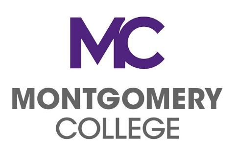

What will you Learn? The Java Web Development Bootcamp takes you from your first java program to developing a web application. This course will give you a fast start on your career so you can take it to the next level. The course will teach you by forcing you to write over 130 java applications, including 5 major web applications. Programming challenges will keep you on your toes. You'll learn to create web pages. You'll use frameworks and stored procedures. You'll connect to a database using the Java Persistence API(JPA) and Hibernate, and most importantly, all assignments are submitted through git, so you will learn to develop using best practices in class, to make it easy to contribute value when you are on the job.
The bootcamp is for programmers with a basic understanding of an object oriented language: Java, C#, VB.NET, Python, PHP, Ruby or C++. You do not need experience developing web applications.
Applicants must be passionate about coding and have the drive to succeed in an immersive environment. Our ideal candidate is an Information Systems or Computer Science major who is either at least a rising junior or graduated within the last six years. If a student doesn't meet those criteria, they can participate in a special one week mini-camp to assess their ability to learn in this environment. Applicants also must be unemployed or underemployed to qualify for the grant. In the state of Maryland, a person who makes $42,000 or less is underemployed. Must be able to work in the United States.
Click on the image below if youre are interested!
